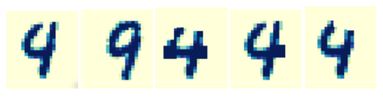

Learning Boolean formulae for explaining AI decisions has exponential complexity. Decisionmaking and planning algorithms are lacking the ability to make correct decisions and choices. This paper focuses on Learning Sparse Boolean Formulae which depend on a small and unknown subset of atomic preposition. To learn these sparse Boolean formulae, the authors [Susmit Jha, Vasumathi Raman, Alessandro Pinto, Tuhin Sahai, and Michael Francis] propose an efficient algorithm.
The authors follow the approach where a typical explanation depends on a small subset say support(Ф) of a overall vocabulary(V), i.e. the state of variable on which the explanation Ф depends is denoted by support(Ф)⊆ V, then | support(Ф) | << | V |. This support or its size is not known. Thus, the explanation are sparse formulae over the vocabulary V. To exploit the efficiency of learning sparse Boolean formulae, following contributions were made:
The proposed approach to solve the k-sparse Boolean formula learning problem has two steps:
Let’s have a look at a classification of MNIST dataset to understand the approach of this paper. MNIST dataset has 0 – 9 digit images of 28X28 pixel. Traditionally in machine learning, KNN classifier is used to classify the digit with optimal K = 9. This classification technique does not give an optimal output as some of the test cases are incorrectly identified which is shown in Fig1.(a). The approach of this paper is used to find explanation for this error. Oracle for generation explanation works as follows : The image 4 has 6 neighbors labelled ‘9’. If the neighbor of the image labelled ‘9’ drops from 6, the oracle makes the image as positive or negative. The vocabulary (V) is formed by 4X4 pixel block being marked completely dark or clear. The set of atomic proposition in the support of the explanation Ф is illustrated manually picking assignment values to support variables. The image filtered by conjunction in the generated examples are Fig1.(c) and (d). This generation process took 3 min 48 sec with 58 examples of image 4 and 9 when we initialize the algorithm. Thus, the approach discussed by the authors is much faster and does not misclassify the digit like the traditional KNN approach.
Fig 1. Left to right : (a)Misclassified image of ‘4’, (b)closest image of ‘9’, (c)changing all pixels corresponding to support of explanations, (d)changing pixels for one of the sufficient explanation, (e)changing pixels for another sufficient explanation
From this paper, we understand how this method can be used to learn Boolean formulae corresponding to the explanation of decisions made by an AI algorithm. Also, that this capability of self-explanation would make AI agents more human-interpretable and decrease the barriers towards their adoption in safety-critical applications of autonomy.